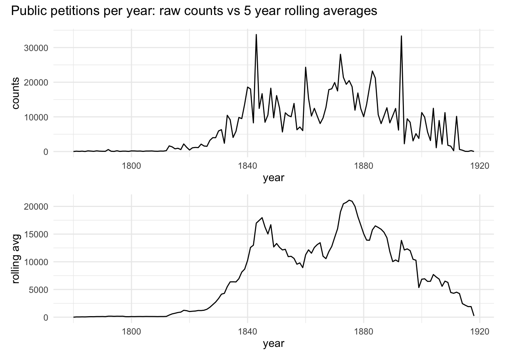
Petitions to the House of Commons, 1780-1918
petitioning
politics
Trends in large-scale political petitioning in the long 19th century
This post explores a dataset from the project Rethinking Petitions, Parliament and People in the Long Nineteenth Century, led by Prof. Richard Huzzey, which is available open access from the UKDA (details at the bottom of the past). There’s also an accompanying 2020 Past and Present article by Richard Huzzey and Henry Miller (also open access) which goes into much more detail than this post will do.
The data was produced as part of a project examining the role of petitions and petitioning in the UK during the ‘long’ nineteenth century (1780-1918) as a universal form of political expression, participation, mobilisation and representative before democracy… in this period many more people petitioned than voted… Petitioning was key to all the major mass campaigns and social movements of the time, such as anti-slavery.
The dataset records over a million public petitions to the House of Commons between 1780 and 1918, by the subjects that they addressed, placed in broader categories to facilitate analysis. For the 1833 to 1918 period, the data also records the 165 million signatures on public petitions to the House of Commons, classified by subject and category. [NB: public petitions are defined as “requests for measures of general applicability rather than demands for specific legislation limited to a locality or particular group”.]
Overview of change over time
There are a lot of fluctuations in annual totals so I’ll use rolling averages (which are really easy to do with the slider package). Makes it easier to see there are two main peaks, in the 1840s and the 1870s. A later peak is more of an isolated spike.
Categories
In the dataset, petition subjects were divided into nine categories (with sub-categories for 1833-1918):
Parliament(inc. elections and representation, parliamentary procedure, monarchy, constitution)Ecclesiastical(inc. church-state relations, established churches, religious liberty, sabbatarianism)Colonies(inc. colonies and their governance, slave trade and slavery, colonial wars)Taxes(inc. direct and indirect taxes, tariffs and trade, licensing)Legal(inc. law and justice, crime and punishment)Social(inc. public health, moral reform, poor law/poverty, labour, education, culture)Economy(inc. finance and commerce, sectors of the economy, land and agriculture)Infrastructure(inc. railways, waterways, roads, communications, local government)War and Peace(inc. foreign policy, war, defence, except for colonial wars)
[See Huzzey and Miller P&P article p.13 for categories data presented in a table.]
A treemap is a nice way to see the relative size of the categories.
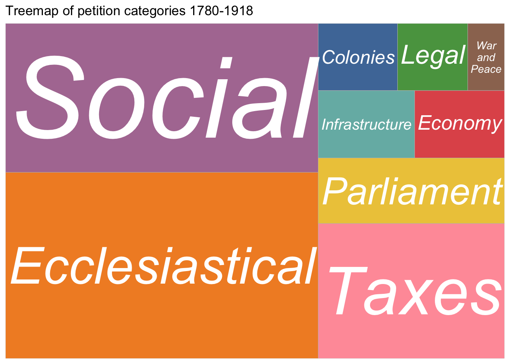
However, when broken down into 1780-1832 and 1833-1918 periods, there are substantial differences. Because the numbers are so much larger, the 1833-1918 treemap looks virtually identical to the overall one.
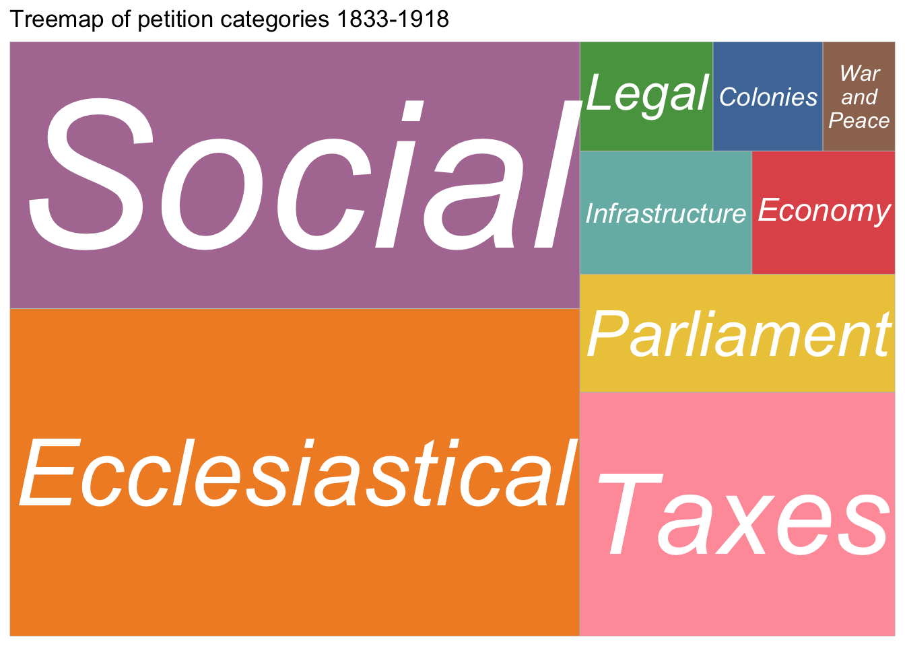
The only 1780-1832 category that’s different enough to register in the overall treemap at all is Colonies. Several categories are more evenly distributed than in the later period, and the relative unimportance of Social issues is striking.
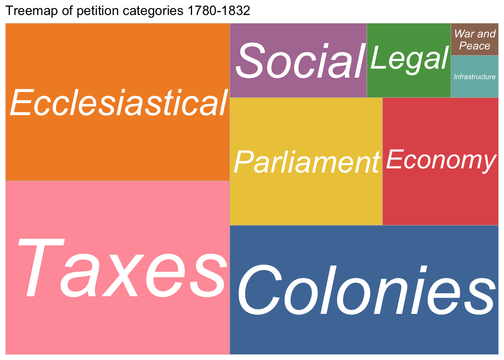
Bar charts are less pretty than treemaps, but they do make comparison of the rankings easier.
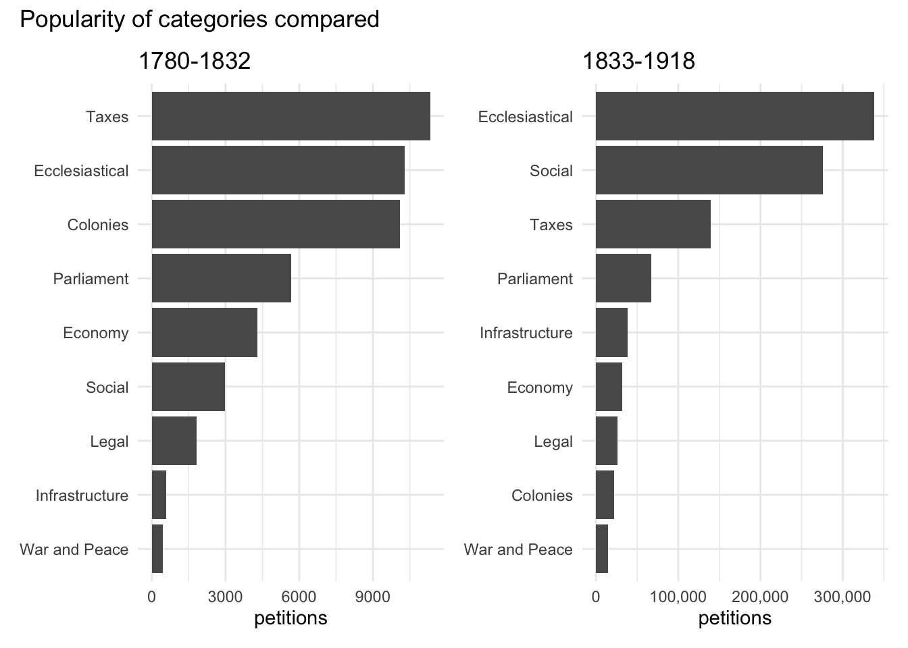
I can do more detailed visualisations of changing priorities using ridgeline plots.
(I’ll split into two periods again, because in a combined chart 1780-32 is too small to see anything much at all.)
The way this works is to divide up the data into roughly 5-year “bins” and calculate the proportion (“density”) of each bin in the category total. Because it’s proportional, it doesn’t matter that categories are different sizes, making it much easier to compare how they change.
So for 1780-1832 we can see that War and Peace is the one category getting any attention before the 1810s, and can also see the take-off (but with some variations) right at the end of the period.
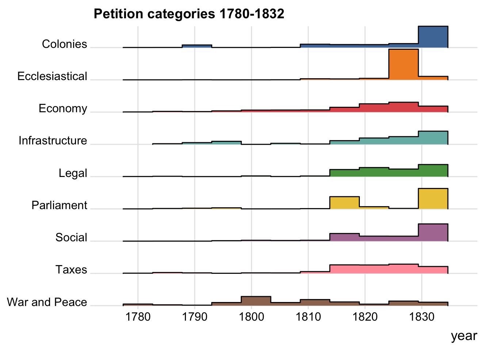
The 1833-1918 ridgeline plot highlights the rapid decline of Colonies after 1840. There are differences in distribution of the two leading categories: Ecclesiastical is quite evenly spread, whereas Social has more ups and downs.
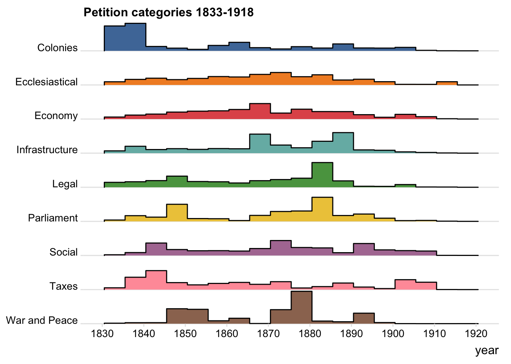
Signatures and petitions (1833-1918)
There are in total 164,806,884 signatures (!), an average of 172.8 signatures per petition.
Broadly speaking, signatures follow the same overall trends as petitions. But the spike in the early years is more prominent: petitions are at their height around 1875, whereas signatures peak in the 1840s.
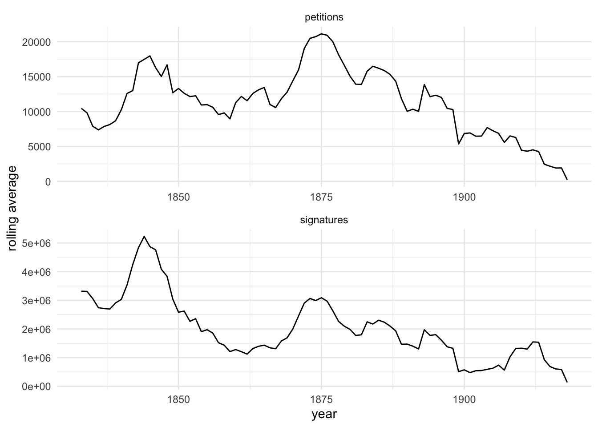
The higher number of signatures per petition before c.1850 can be seen here too, but is dwarfed by the massive increase in signatures per petition from about 1910. According to Huzzey and Miller, after 1900 petitioning “was sustained to an even greater degree by a few long-running campaigns” (p. 18); in other words a higher proportion of (the much smaller numbers of) petitions had lots of signatures.
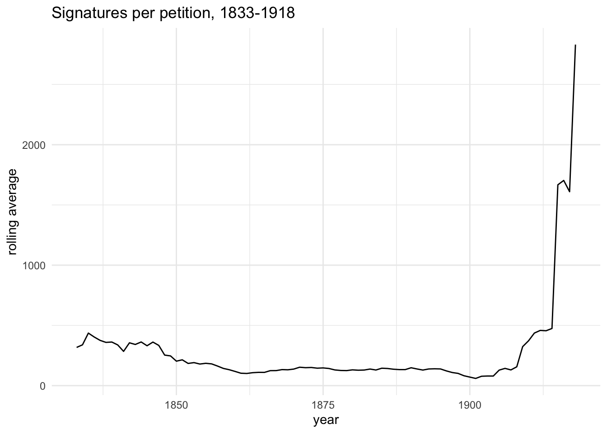
Unsurprisingly perhaps, signatures per petition also vary considerably by petition category. But if you compare with the earlier bar charts, they actually vary rather less than numbers of petitions.
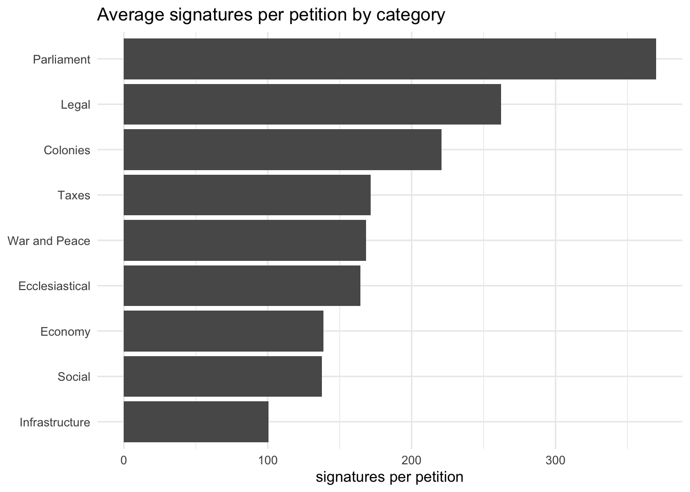
As a treemap, just because.
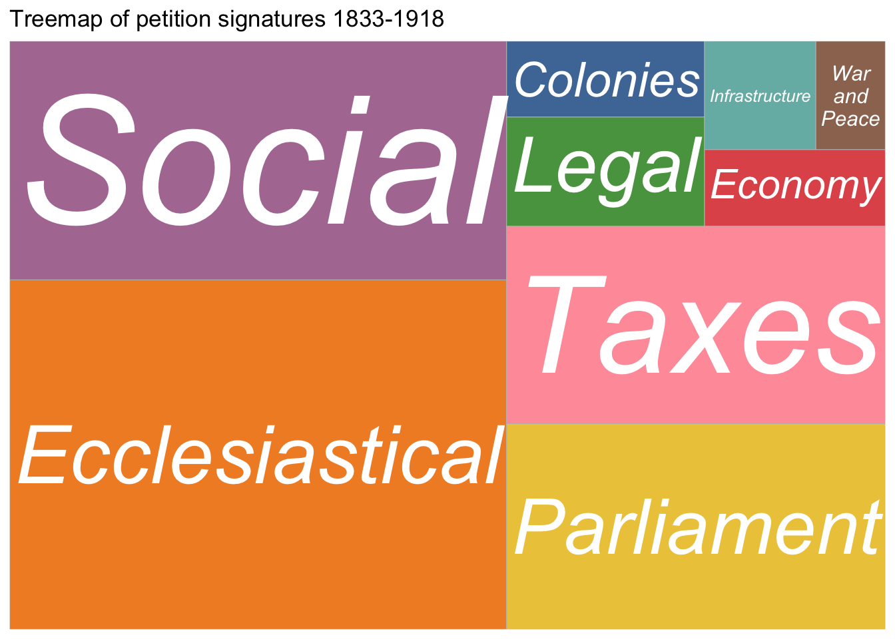
Data citation
Miller, Henry and Huzzey, Richard (2022). Public Petitions to the House of Commons, 1780-1918. [Data Collection]. Colchester, Essex: UK Data Service. 10.5255/UKDA-SN-855556
Resources
The dataset: Public Petitions to the House of Commons 1780-1918
P&P article: Richard Huzzey and Henry Miller, Petitions, Parliament and Political Culture: Petitioning the House of Commons, 1780–1918, Past & Present (2020)
Using the slider package for rolling averages
Ridgeline plots